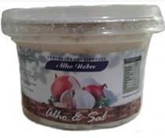
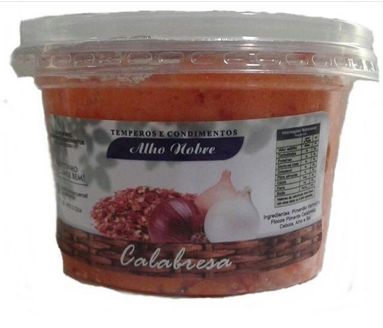
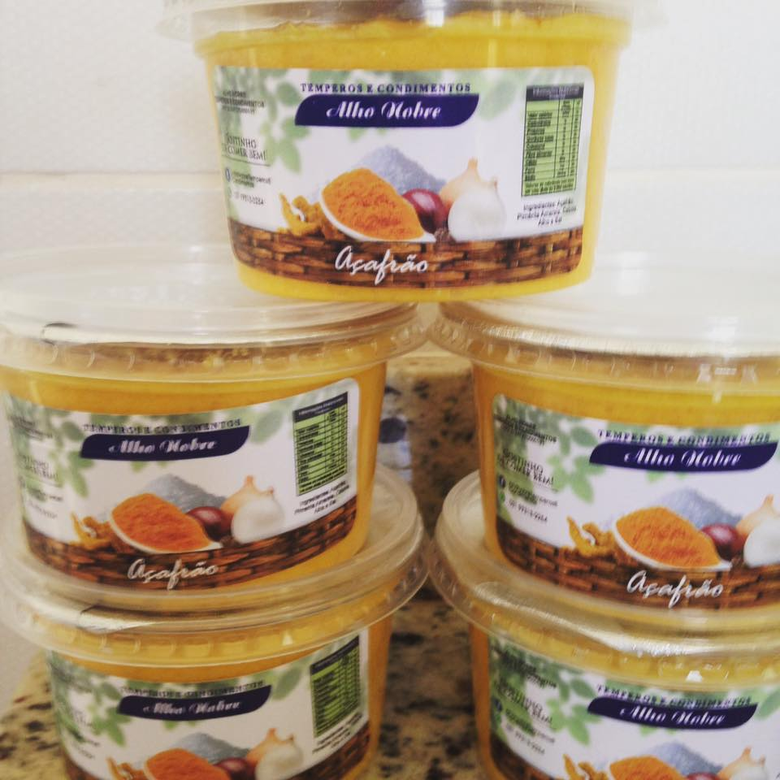

NOSSOS PRODUTOS
Tempero Alho e Sal
ingredientes: Alho e sal. esse é um tempero tradicional, ideal para qualquer tipo de comida
Tempero Cheiro Verde

ingredientes: Alho, sal, cebola, salsinha, cebolinha e coentro, ideal para temperar saladas e carnes.
Tempero Calabresa
ingredientes: Alho, sal, cebola, pimentão vermelho e pimenta calabresa em flocos, ideal para temperar carnes em geral.
Tempero Açafrão
ingredientes: Alho, sal, cebola, pimentão amarelo e açafrão em pó, ideal para temperar frango e ençopados